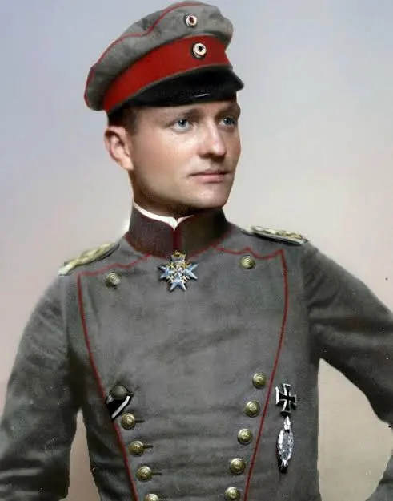
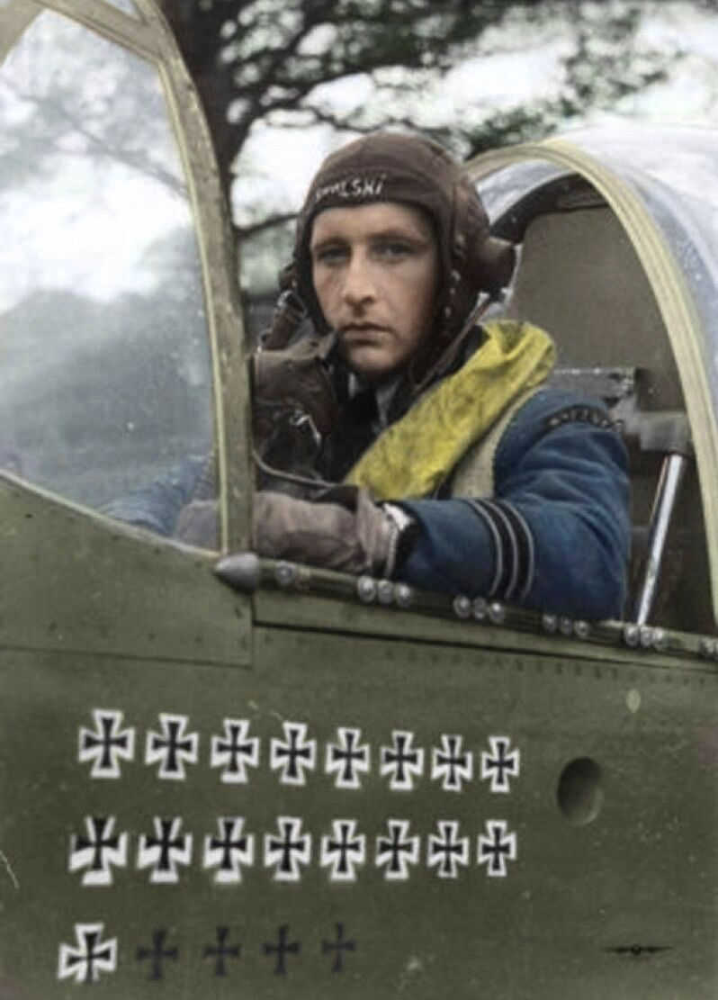

LEGENDY PODNIEBNYCH WALK
Najlepsi piloci w historii i maszyny, które poprowadzili do zwycięstwa.

Manfred "Czerwony Baron" von Richthofen
Niemcy (Luftstreitkräfte)Najsłynniejszy pilot I wojny światowej. Genialny taktyk, dowódca elitarnej eskadry zwanej „Latającym Cyrkiem”. Stał się ikoną popkultury dzięki swojemu trójpłatowcowi pomalowanemu na wściekle czerwony kolor. Zginął w walce w 1918 roku, a alianci pochowali go z pełnymi honorami wojskowymi z szacunku dla jego kunsztu.
Fokker Dr.I
Legendarny, czerwony trójpłatowiec, który mimo przeciętnej prędkości nadrabiał niesamowitą zwrotnością w walce kołowej.

Stanisław Skalski
Polska (PLF / RAF)Najwybitniejszy as myśliwski polskiego lotnictwa z okresu II wojny światowej. Pierwszy aliancki as tej wojny. Brał udział w kampanii wrześniowej, bitwie o Anglię, a później dowodził m.in. słynnym "Cyrkiem Skalskiego" w Afryce Północnej. Słynął z niesamowitego instynktu taktycznego i agresywnego stylu walki.
Główna maszyna: Supermarine Spitfire Mk.IX
To na tej maszynie (oznaczonej osobistymi literami "ZX-O") Skalski i jego piloci siali popłoch nad Tunezją.